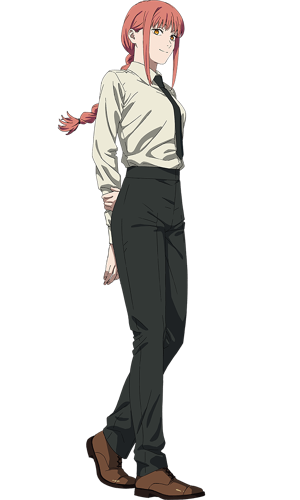

SYNOPSIS

Chainsaw Man is a Japanese manga series written and illustrated by Tatsuki Fujimoto. Its first arc was serialized in Shueisha's shōnen manga magazine Weekly Shōnen Jump from December 2018 to December 2020; its second arc began serialization in Shueisha's Shōnen Jump+ online magazine in July 2022. Its chapters have been collected in 14 tankōbon volumes as of April 2023.
Chainsaw Man follows the story of Denji, an impoverished young man who makes a contract that fuses his body with that of a dog-like devil named Pochita, granting him the ability to transform parts of his body into chainsaws. Denji eventually joins the Public Safety Devil Hunters, a government agency focused on fighting against devils whenever they become a threat to Japan.
The second arc of the story focuses on Asa Mitaka, a high school student who enters into a contract with Yoru, the War Devil, who forces her to hunt down Chainsaw Man in order to reclaim the devils stolen from
AUTHOR
Tatsuki Fujimoto, born October 10 1992 is a Japanese manga artist, known for his works Fire Punch and Chainsaw Man.
Fujimoto started drawing at an early age. He had no preparatory schools available near his home, so he went to painting classes in which his grandparents attended and practiced oil painting. He graduated in Western painting from Tohoku University of Art and Design in Yamagata, Yamagata Prefecture in 2014.
Fujimoto commented that he wanted to "draw manga like Korean films", citing the 2008 South Korean film The Chaser as example, stating: "the main character chases after the villain, but thirty minutes into the movie, he catches him. This is supposed to happen at the end of the movie, so you keep wondering what will happen next. A lot of people say that in Korean movies they cannot tell what the director is thinking, but actually, if you watch until the end, you will get it. I wanted to make something like that.
CHARACTERS
Denji
Denji is the titular protagonist of the Chainsaw Man manga and anime series. He is the main protagonist of the Public Safety Saga and the tritagonist4 of the Academy Saga.
As a young boy, he inherits his father's debts from the Yakuza. After meeting Pochita, he becomes a Devil Hunter for the Yakuza in an attempt to clear his debt. Once the Yakuza, under the control of a Devil, betrays him, he dies and Pochita becomes his heart. He is then revived and can become the Chainsaw Man by pulling a cord on his chest. After meeting Makima, he became a Public Safety Devil Hunter as a member of Tokyo Special Division 4.
Denji is both brash and naïve as a result of being unable to have a formal education and socialize due to living in severe poverty. His personality comes off as rude and harsh in an almost childish way. However, he has a good sense of empathy towards other people, willing to save those in danger as much as he could, showing he is a kind-hearted person despite his shortcomings.
Pochita

Pochita is the Chainsaw Devil who embodies the fear of chainsaws. He was the original Chainsaw Man prior to becoming Denji's heart. He is the overarching titular protagonist of the series.
Unlike most Devils Pochita communicated solely through barks and whines like an actual dog. However, after fusing with Denji, he is able to communicate telepathically with him. He continuously communicates with Denji through dreams, warning him to not 'open the door'.
Pochita deeply cared for Denji after his life was saved by the human, despite the Devil's general hatred toward humankind. He willingly gave up his heart to Denji so that he could fulfill his dreams which Pochita loved hearing about. He also showed that he knows Denji very well and is able to mimic Denji`s personality and behavior to fool Makima. Pochita exhibits a more erratic personality when in his true Devil form, as shown when he quickly murders anyone who expressed even the slight bit of hostility towards him in the burger joint.
Makima
Makima was the main antagonist of the Public Safety Saga. She was a high-ranking Public Safety Devil Hunter who took Denji in as her human pet.
She is later revealed to be the Control Devil who embodies the fear of control or conquest. Following her death, she is reincarnated as Nayuta.
On the surface, Makima seems to be a nice, gentle, social and friendly woman who is almost seen wearing a smile on her face the entire time and acts relaxed and confident even during a crisis, speaking in a professional tone to her workers. As her natural appearance is nearly identical to that of a human, she avoids disclosing her Devil nature to most of her underlings and spends much of the series posing as a human contracted to a Devil rather than a Devil herself.
However, this is only a façade that she uses to fulfill her ultimate goal. After the death of Aki Hayakawa, Makima begins to reveal her true colors to Denji. Makima's true face is of someone that is Machiavellian and calculating, who sees people around her as nothing more than "dogs" she can use as she much as she likes and must obey her without any hesitation.
Power
Power was the tritagonist of the Public Safety Saga. She was the Blood Fiend and a Public Safety Devil Hunter who was part of Makima's special squad.
Power is childish, greedy, and almost entirely self-motivated. She tends to fight as if she has something to gain and is certain of her victory, and has no problems with running away from a fight where she is outmatched. She feels the need to boast her superiority over her fellow Devil Hunters due to her status as a Fiend. She has no loyalty to humans or Devils, openly admitting that she will join whichever is the winning side.
Power also enjoys the thrill of a fight and enjoys showing off her strength and proving her own superiority. When she was in front of an army of zombies she got excited and told Denji to watch carefully how she single-handedly defeats all of them. She is highly egoistical and often claims she is capable of doing things she cannot actually do, only to abandon them halfway through when the situation turns sour for her. She frequently deflects the consequences of her actions to those around her.
Aki Hayakawa
Aki Hayakawa was the deuteragonist of the Public Safety Saga. He was a Public Safety Devil Hunter working under Makima's special squad who had contracts with the Curse Devil and Future Devil, and a former contract with the Fox Devil.
During the Gun Devil arc, he was killed and possessed by 20% of the Gun Devil, thus becoming the host of the Gun Fiend.
Aki generally appeared to be a very stoic person. He acted mature and sometimes blunt to the point of rudeness when he was with his fellow Devil Hunters, but he was actually fairly softhearted. He had a tendency to get attached to others easily, and hated to see people get hurt, especially his close friends.
Despite this, he was very determined and his primary motivation for killing the Gun Devil was revenge for his family. He was, however, entirely willing to put his own life on the line to save other people despite his own fear of death and even at risk to his ultimate goal.
For Fans

WATCH NOW:)

Buy Manga

Buy Merch
You May Like These...

NARUTO

DEMON SLAYER

POKEMON
© Made by - Pranesh Pandian S